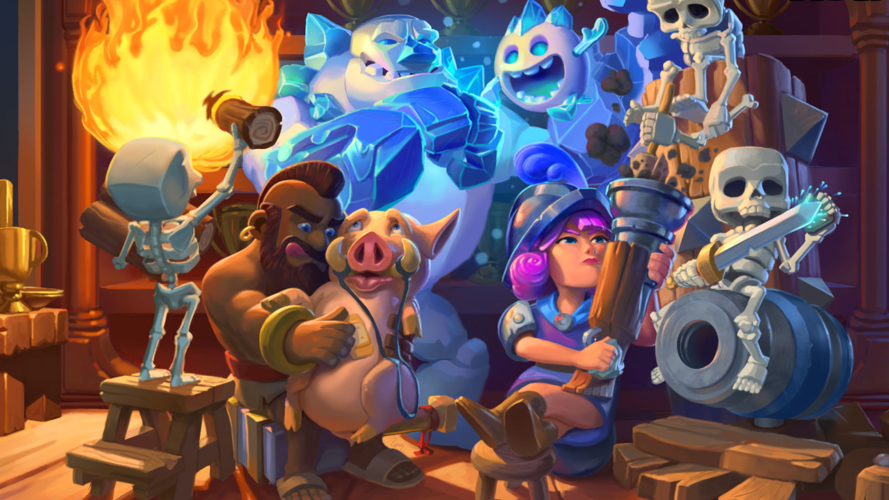

Trophées & Paliers : Chaque victoire en combat 1v1 compétitif rapporte environ 30 trophées. Une arène représente un nouveau palier de progression.
Les arènes compétitives : Il existe actuellement 25 arènes compétitives. Pour passer à l'arène suivante, il faut accumuler entre 300 et 500 trophées par palier.
Les Arènes Saisonnières : En plus des arènes compétitives, 5 arènes saisonnières sont disponibles. Elles deviennent accessibles une fois les 24 premières arènes franchies. Au début de chaque nouvelle saison, le compteur de trophées est remis à 10'000 et de nouvelles arènes saisonnières sont ajoutées.
Le Mode Classé : À partir de 10'500 trophées, le mode classé se déverrouille. Chaque victoire permet de progresser vers le palier suivant. Atteindre le rang de Champion Suprême signifie rejoindre l'élite du jeu : le Top Ladder, où l'on affronte les meilleurs joueurs de Clash Royale.
| Nom de l'arène | Nbr. de trophées |
|---|---|
| Gobelinarium | 0 |
| Fosse aux os | 300 |
| Arènes des barbares | 600 |
| Vallée des sorts | 1000 |
| Atelier d'ouvrier | 1300 |
| Parc P.E.K.K.A Land | 1600 |
| Arène royale | 2000 |
| Sommet glacé | 2300 |
| Arène sauvage | 2600 |
| Mont des cochons | 3000 |
| Vallée électrique | 3400 |
| Ville sinistre | 3800 |
| Planque des fripons | 4200 |
| Mont de la sérénité | 4600 |
| Dans la mine | 5000 |
| Cuisine du bourreau | 5500 |
| Crypte royale | 6000 |
| Sanctuaire silencieux | 6500 |
| Sauna du dragon | 7000 |
| Camp d'entraînement | 7500 |
| Festival Clash | 8000 |
| Pancakes ! | 8500 |
| Valkalla | 9000 |
| Arène légendaire | 9500 |
| Cabane du bûcheron | 10000 |